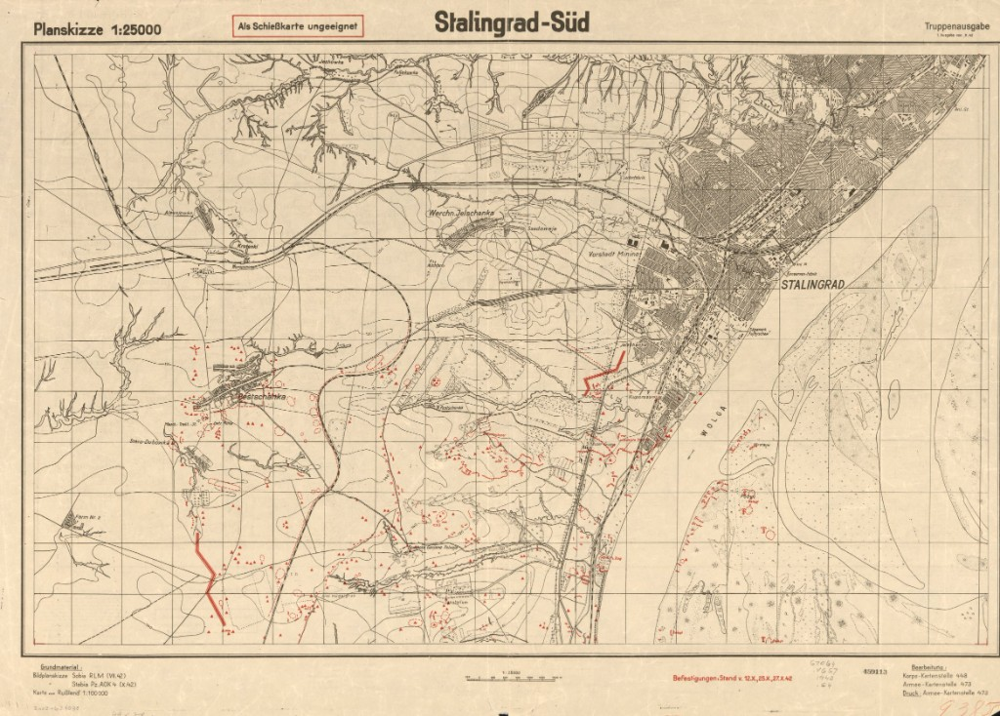
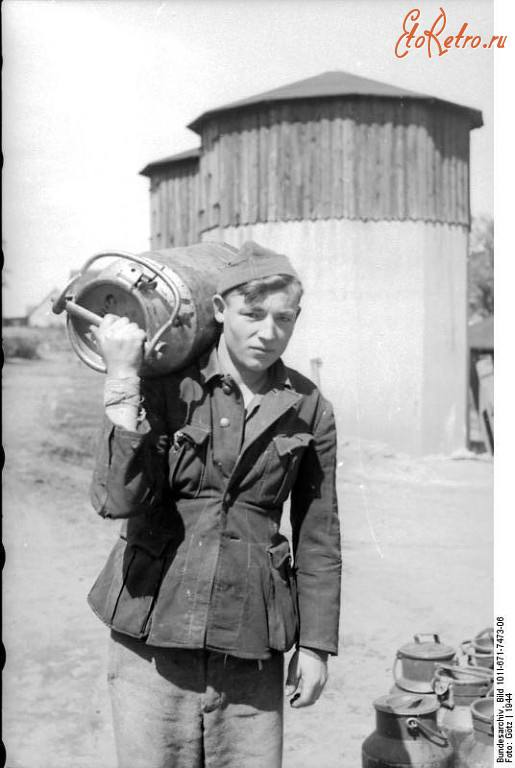
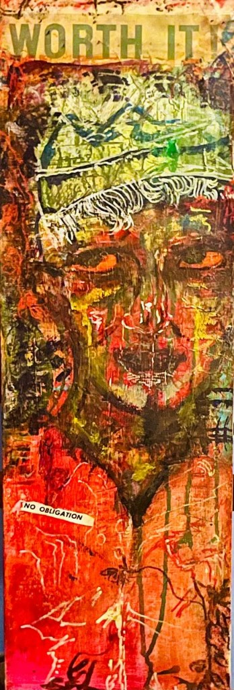
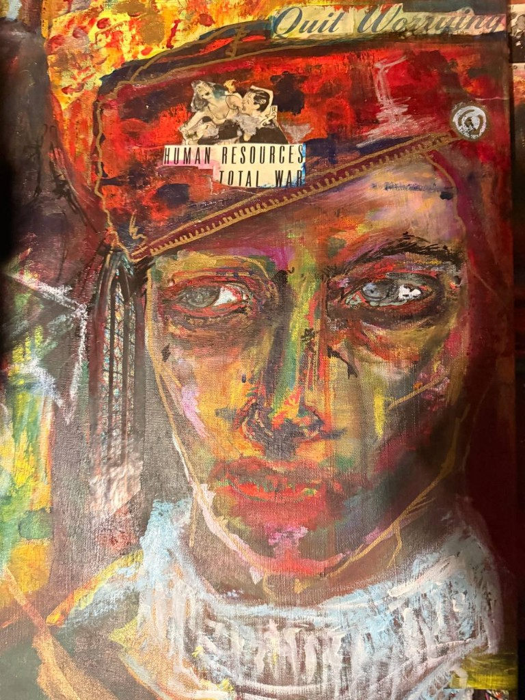
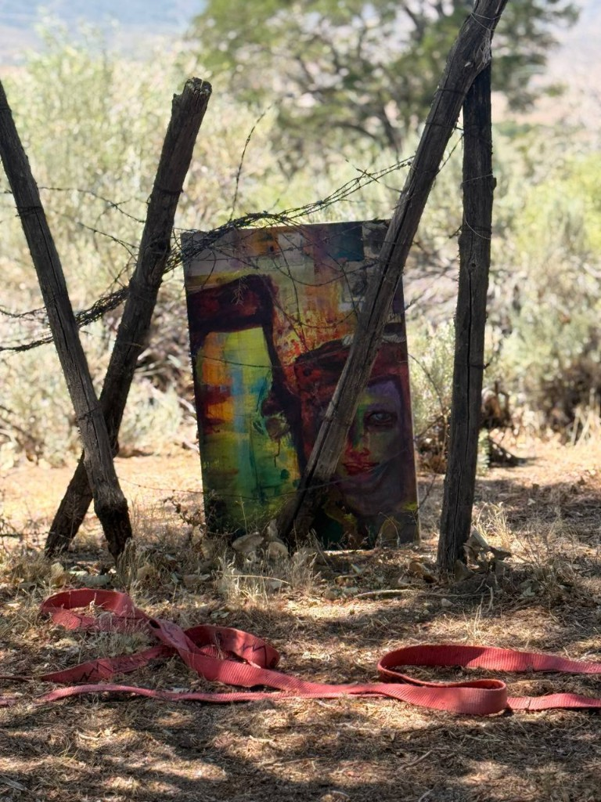
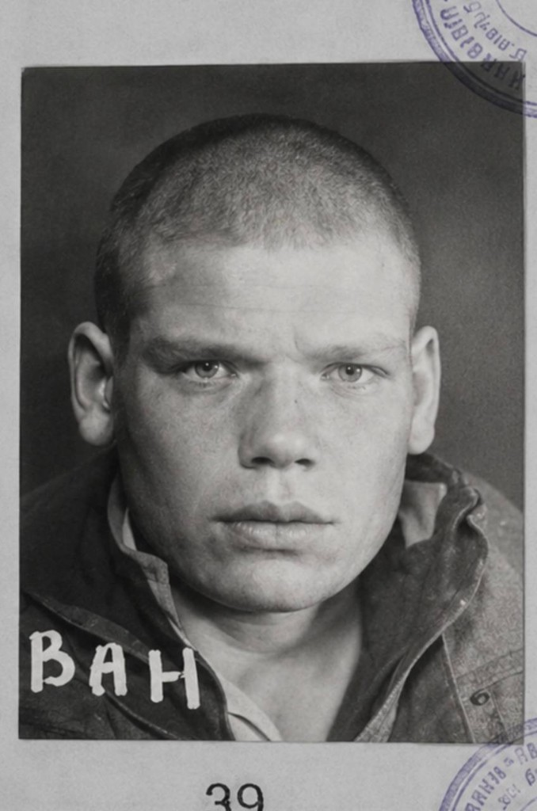
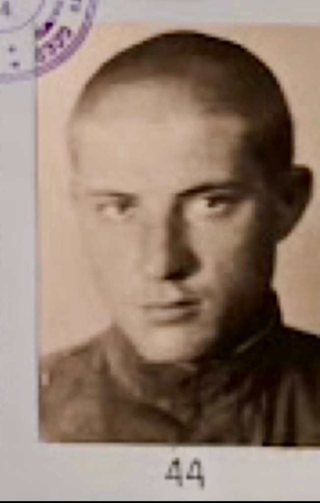
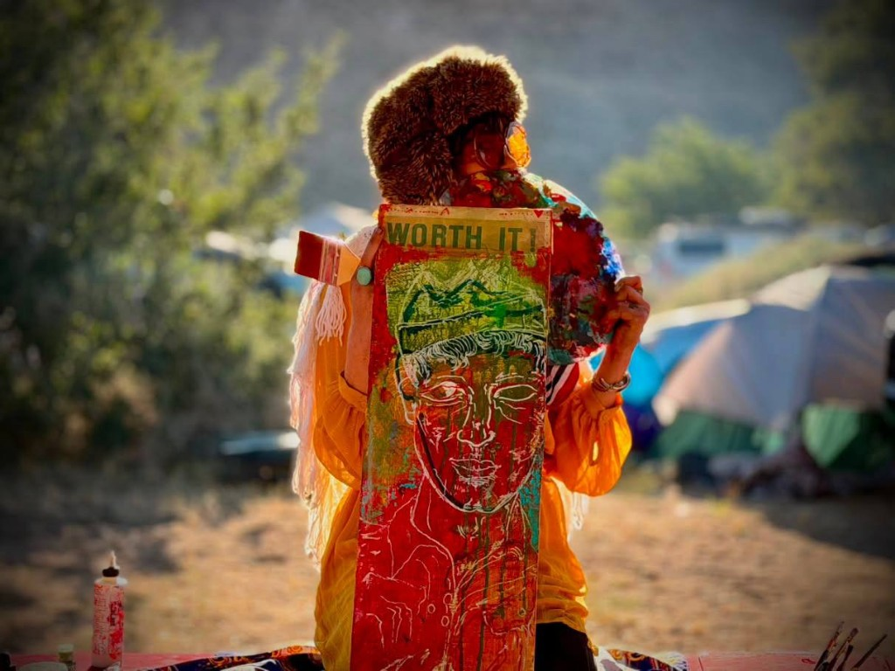

THE ENCIRCLEMENT
A city held inside a ring; the ring held inside a larger one. The map is a diagram of a condition, not a battle.
Source: German situation map of Stalingrad, 1942.
1942 / map sheet
an inward journey through the eastern front
LETHE
An inward journey through the Eastern Front.
Enter the Archivethe true subject of the work
The true subject of my work is not war alone, but the remnants and residue woven through it and carried beyond it.
I approach the Eastern Front as an immense philosophical, psychological, and human field. The paintings begin with archival photographs, but they do not remain there. I return to particular figures, gestures, and expressions until the static image begins to open into something less fixed.
I am drawn to what remains after an extreme event: what survives anonymity, what persists beneath collapse, and what continues after memory has begun to erode.
The work is my attempt—perhaps my damned attempt—to create an aperture into that perception.
selected works


reference photograph / archival source


reference photograph / hiwis



reference photograph / archival source


reference photograph / archival source


what remains
I do not encounter every archival photograph as a static historical image.
At times, a figure refuses to remain entirely fixed within it. A posture, an expression, or a particular inward distance continues to exert a presence long after the event itself has passed.
Most, if not all, of the individuals I paint remain anonymous. Many likely never saw the photograph in which they appeared. Some may not have known the image was taken at all.
Decades later, I meet them through paint.
I am not reconstructing history. I am searching for what remains within it.
I am sifting on canvas what my eyes see in my subjects’ eyes.
a conversation with lethe
A conversation on the Eastern Front, archival encounter, historical memory, and the compulsion behind the work.
I had seen the photograph before. When I returned to it years later, something in it had changed—or I had. There was a ricochet of energy. It reoriented my compass.
practice
The work develops through painting, collage, abrasion, accumulated pigment, and repeated return.
Historical material enters the studio through photographs, testimony, correspondence, maps, objects, and fragments. I do not use the archive as illustration. It is where the encounter begins.
Research and intuition remain inseparable within the work.

lethe
A position between memory and disappearance.
the artist
Alexandria Chanel is a figurative painter and independent historical researcher based on the West Coast.
Her work concerns the world of the Eastern Front, the individual within the event, and what remains after it.
Her ongoing body of work carries the moniker Lethe and moves between remembrance and obliteration, the enormous historical event and the intimate individual held within it.

field notes / archive
A drawer, not a blog. Each entry is a fragment: an image, an observation, a source, a date.

A city held inside a ring; the ring held inside a larger one. The map is a diagram of a condition, not a battle.
Source: German situation map of Stalingrad, 1942.
1942 / map sheet

A single object outlives the person who wore it. The helmet is not a symbol; it is a residue.
Source: sketchbook study after period photograph. Subject unidentified.
undated / field study
The factory kept producing after the roof was gone. Industry is the other soldier in this war.
Source: period photograph, Barrikady works, Stalingrad, November 1942.
November 1942 / archival photograph

A musician appears between the guns. The photograph records a man keeping something alive in the middle of the end.
Source: period photograph, Eastern Front. Subject and date unverified.
undated / archival photograph
A fortress made of grain. The elevator held longer than many prepared defenses.
Source: account and photographic record, Stalingrad, 1942.
1942 / archival reference

Sounds recorded near the ground of the front: machinery, weather, silence. The archive keeps them as long as it can.
Source: field recording collection, provenance to be verified.
forthcoming

Soldiers’ language survives in letters and songs more than in official records. The poems are part of the archive.
Source: collection of soldiers’ letters and songs, Eastern Front. Individual attributions unverified.
undated / collection
Two rivers, one choice. The archive is the place where the choice is kept open.
Source: mythological reference; title of the moniker.
undated / note
correspondence
For exhibitions, residencies, publications, studio visits, archival exchange, and serious conversation concerning the work.
academic veracity
Every historical image, map, quotation, date, and archival claim should include a source in the expanded view or caption.
I do not fabricate coordinates, archive numbers, military unit references, dates, quotations, or captions for visual effect.
If a subject cannot be identified, it is labeled unidentified rather than assigned a nationality, unit, rank, or location without evidence.
The archive distinguishes clearly between archival description, my observation, and my interpretation. Original wartime captions may contain propaganda language, errors, ideological framing, or obsolete terminology; they are preserved only when historically necessary and identified as original captions rather than neutral descriptions.